![[Warning]](../images/warning.png) | |
This component will be available in the Palette of the studio on the condition that you have subscribed to the relevant edition of Talend Enterprise Data Quality . |
|
Component family |
Data quality | ||||
|
Function |
tStandardizeRow tokenizes the data flow it has received from the preceding component and applies user-defined parser rules to analyze the data. Based on this analysis, this component normalizes and writes these data in a separate XML data flow and tags them using the user-defined rule names. The standardization option adds a supplementary column to the output flow where the normalized data are then standardized. The Java library ANTLR is used to parse and tokenize the incoming data. For further information about ANTLR, see the site
| ||||
|
Purpose |
tStandardizeRow normalizes the incoming data in a separate XML data flow. This allows you to separate, even standardize if need be, the rule-compliant data from the non-compliant data. | ||||
|
Basic settings |
Schema and Edit schema |
A schema is a row description, i.e., it defines the number of fields that will be processed and passed on to the next component. The schema is either built-in or remote in the Repository. | |||
|
|
|
Built-in: You create the schema and store it locally for this component only. Related topic: see Talend Enterprise Studio User Guide. | |||
|
|
|
Repository: You have already created the schema and stored it in the Repository. You can reuse it in various projects and job designs. Related topic: see Talend Enterprise Studio User Guide. | |||
|
|
Column to parse |
Select the column to be parsed from the received data flow | |||
|
|
Standardize this field |
Select this check box to standardize the rule-compliant data identified, that is, to replace the duplicates of the identified data with the corresponding standardized data from a given index. For further information about this index providing standardized data, see the section called “tSynonymOutput”.
| |||
|
|
Conversion rules |
Complete this table to define the rules you need to apply. The table columns to be filled are: - Name: in this column, name the rule you need to use. This name is also used as the XML tag name and the token name to label the incoming data identified by this rule. - Type: in this column, select the type of the rule you need to apply. For further information about the rule types available, see the section called “Rule types”. - Value: in this column, type in the rule you need to define.
| |||
|
|
Generate parser code in Routines |
Click this button to enable the data parser of your Studio to recognize the rules defined in the Conversion rules table.
| |||
|
and |
Click the import or export button to exchange a given standardization rule set with the DQ Repository. - When you click the export button, your studio is switched to the Profiling perspective and the Parser rule Settings view is opened on the workspace with the relative contents filled automatically . Then if need be, you can edit the exported rule set and save it to the Libraries > Rules > Parser folder in the DQ Repository tree view. - When you click the import button, a import wizard is opened to help you import the standardization rule of interest. For further information, see Talend Data QualityUser Guide. | ||||
|
Advanced settings |
tStatCatcher Statistics |
Select this check box to collect log data at the component level. | |||
|
Usage |
This component is an intermediary step. It requires an input flow as well as an output. This component generates Java code in the Routines node of the Repository tree view. This code implements the grammar defined in rules. It is automatically compiled to be used by the component. When you modify /add/delete a rule, the code must be generated again, so that the Job takes the modifications into account and then becomes runnable. To generate it, click the Generate parser code in Routines button. | ||||
|
Connections |
|
Outgoing links (from one component to another): Row: Main; Reject Trigger: Run if; On Component Ok; On Component Error.
Incoming links (from one component to another): Row: Main; Reject
For further information regarding connections, see Talend Enterprise Studio User Guide. | |||
|
Limitation |
n/a | ||||
Two groups of rule types are provided: the basic rule types and the advanced rule types.
Basic rule types: Enumeration, Format and Combination. Rules of these types are composed with some given ANTLR symbols.
Advanced rule types: Regex, Index and Shape. Rules of these types match the tokenized data and standardize them when needed.
To create the rules of any type, Talend provides the pre-defined and case-sensitive elements (ANTLR tokens) as follows for defining the composition of a string to be matched:
INT: integer;
WORD: word;
WORD+: literals of several words;
CAPWORD: capitalized word;
DECIMAL: decimal float;
FRACTION: fraction float;
CURRENCY: currencies;
ROMAIN_NUMERAL: Romain numerals;
ALPHANUM: combination of alphabetic and numeric characters;
WHITESPACE: whitespace
UNDEFINED: unexpected strings such as ASCII codes that any other token cannot recognize.
The following three tables successively present detailed information about the basic types, the advanced types and the ANTLR symbols used by the basic rule types. These three tables help you to complete the Conversion rules table in the Basic settings of this component.
For basic rule types:
|
Basic Rule Type |
Usage |
Example |
Conditions of rule composition |
|---|---|---|---|
|
Enumeration |
A rule of this type provides a list of possible matches. |
RuleName: RuleValue: “ |
- Each option must be put in a pair of single quotation marks unless this option is a pre-defined element. - Defined options must be separated by the | symbol. |
|
Format (Rule name starts with upper case) |
A rule of this type uses the pre-defined elements along with any of user-defined Enumeration, Format or Combination rules to define the composition of a string.
|
RuleName: RuleValue: This rule means that a whitespace between decimal and
lengthunit is required, so it matches strings like,
1.4 cm but does not match a string like
1.4cm. To match both of these cases, you need to define this
rule as, for example,
|
- When the name of a Format rule starts with upper case, this rule requires the exact matching result. It means that you need to define exactly any single element of a string, even a whitespace. |
|
Format (Rule name starts with lower case) |
A rule of this type is almost the same as a Format rule starting its name with upper case. The difference is that the Format rule with lower-case initial does not require exact match. |
RuleName: RuleValue: The rule matches strings like 1.4 cm or
1.4cm etc. where the
|
n/a |
|
Combination |
A rule of this type is used when you need to create several rules of the same name. |
RuleName:
RuleValue: The rule matches strings like 1.4 cm by 1.4
cm, where |
- Literal texts or characters are not accepted as a part of the rule value. When the literal texts or characters are needed, you must create an Enumeration rule to define these texts or characters and then use this Enumeration rule instead. - When several Combination rules use the identical rule name, they are executed in top-down order in the Conversion rules table of the Basic settings of tStandardizeRow, so arrange them properly in order to obtain the best result. For an example, see the following scenario. |
| |
Any characters or string literals, if accepted by a rule type, must be put in single quotation marks when used, otherwise they will be treated as ANTLR grammar symbols or variables and generate errors or unexpected results at runtime. |
For advanced rule types:
|
Advanced Rule Type |
Usage |
Example |
Conditions |
|---|---|---|---|
|
Regex |
A rule of this type uses regular expressions to match the incoming data tokenized by ANTLR. |
RuleName: RuleValue: The rule matches strings like “92150” |
Regular expressions must be Java compliant. |
|
Index |
A rule of this type uses a synonym index as reference to search for the matched incoming data. For further information about available synonym indexes, see the appendix about data synonym dictionaries in the Talend Enterprise Data Quality User Guide. |
A scenario is available in the section called “Scenario 2: Standardizing addresses from unstructured data”. |
- In Windows, the backslashes - When processing a record, a given Index rule matches up only the first string identified as matchable. |
|
Shape |
A rule of this type uses pre-defined elements along with the established Regex or Index rules or both to match the incoming data. |
RuleName: RuleValue:
This rule matches the addresses like 12 main street, where INT and WORD are pre-defined tokens (rule elements) and StreetType is an Index rule which you define along with this example rule in the Basic settings view of this component. For further information about the Shape rule type, see the section called “Scenario 2: Standardizing addresses from unstructured data”. |
Only the contents put in |
For the given ANTLR symbols:
|
Symbols |
Meaning |
|---|---|
|
|
alternative |
|
|
char or string literal |
|
|
1 or more |
|
|
0 or more |
|
|
optional or semantic predicate |
|
|
match not |
Examples of using these symbols are presented in the following scenarios, but you can also find more examples on the following site:
http://www.antlr.org/wiki/display/ANTLR3/ANTLR+Cheat+Sheet
In this scenario, two successive steps are performed to:
normalize the incoming data (separate the compliant data from the non-compliant data) and,
extract the data of interests and display them.
Before replicating these two steps, we need to analyze the source data in order to figure out what rules need to be composed. For this scenario, the source data are stored in a .csv file called partsmaster.
There are totally 59 rows of raw data, but some of them are not shown in our capture.
Through observation, you can expect that the third row will not be recognized as it contains Oriental characters. Furthermore, you can figure out that:
the SKU data contains 34-9923, XC-3211 and pb710125 and so on. So the rule used to parse the SKU data could be:
|
Name |
Type |
Value |
|---|---|---|
|
|
|
|
for the Size data, the correct format is the multiplication of two or three lengths plus the length units. Therefore, the rules used to parse the Size data could be:
|
Name |
Type |
Value |
|---|---|---|
|
|
|
|
|
|
|
|
|
|
|
|
|
|
|
|
|
|
|
|
Two Combination rules use the same name, in which case, they will be executed in top-down order as is presented in this table.
for the Weight data, the correct format is the weight plus the weight unit. Therefore, the rules used to parse the Weight data are:
|
Name |
Type |
Value |
|---|---|---|
|
|
|
|
|
|
|
|
Now, you can begin to replicate the two steps of this scenario.
In this first step, four components are used. They are
tFileInputDelimited (partsmaster): this component loads and outputs the source data to the component that follows.
tStandardizeRow: this component normalizes the incoming data and rejects the exception data that it cannot recognize.
tLogRow: this component is used two times to display respectively the exception data and the output XML data.
To replicate this step, proceed as the following sections illustrate.
To replicate this step, proceed as follows:
Set up the file delimited schema for the partsmaster.csv file in the Repository of your Studio. For further information about how to set up a file delimited schema, see Talend Enterprise Studio User Guide.
Under the Metadata node of the Repository of your Studio, select the file delimited schema for partsmaster.csv and drop it on the design workspace.
From the dialog box that pops up, select tFileInputDelimited.
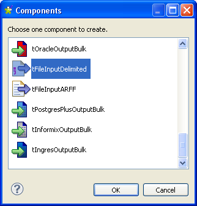Then the tFileInputDelimited (partsmaster) component displays in the design workspace.
From the Palette, drop the tStandardizeRow component and two tLogRow components into the design workspace.
Right-click tFileInputDelimited (partsmaster) to open the contextual menu.
From the contextual menu, select Row > Main link to connect this component to tStandardizeRow.
Accept the schema propagation prompted by the pop-up dialog box.
From tStandardizeRow, do the same to connect this component to one of the two tLogRow components using Row > Main link and to the other using Row > Reject link and accept the schema propagation.
![[Note]](../images/note.png) | |
You can change the name displayed for each of these component as what has been done for one of the tLogRow component, named as Exception in this scenario. For further information, see Talend Enterprise Studio User Guide. |
Then you can continue to configure each component to be used.
To do this, proceed as follows:
Double-click tStandardizeRow to open its Component view.
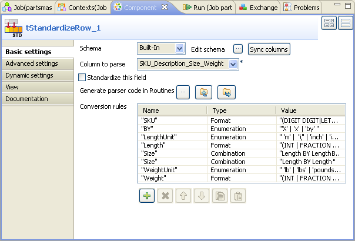In the Column to parse field, select SKU_Description_Size_Weight. This is the only column that the incoming schema has.
Under the Conversion rules table, click the plus button eight times to add eight rows in this table.
To complete these rows, type in the rules you have figured out when analyzing the raw data at the beginning of this scenario.
The two Size rules are executed in top-down order. In this example, this order allows this component to match firstly the sizes with three numbers and then those with two numbers. If you reverse this order, this component will match the first two numbers of all sizes before all and then treat the last number of the three-numbers sizes as unmatched.
Click the Generate parser code in routines button.
Press F6 to run this Job.
In the console of the Run view, you can read the output data structure.
Corresponding to the raw data, such as, 34-9923, Monolithic Membrance, 4’ x 8’, 26 lbs, an XML segment is generated where the compliant data are separated from the noncompliant data (unmatched). Thus the raw data are normalized.
Again from this console, you can read that a row is rejected as it contains unrecognizable data.
This section presents the second step of this scenario. Four components are added to receive the normalized XML data in place of the tLogRow component which was set for this action in the first step. The four components are:
tExtractXMLField: this component reads an input XML field and extracts desired data;
tFilterRow: this component filters input rows by setting conditions on the selected columns;
tLogRow (two times): the two components receive and display respectively the valid or invalid data against conditions set in tFilterRow.
To replicate the second step, proceed as the following sections illustrate.
To do this, proceed as follows:
On the design workspace, delete the tLogRow component that is connected to tStandardizeRow with Main row link.
From the Palette, drop tExtractXMLField, tFilterRow and two tLogRow components into the design workspace. In this scenario, the two tLogRow components are named respectively ValidSize and InvalidSize.
For further information about how to rename a component, see Talend Enterprise Studio User Guide.
Connect tExtractXMLField to tFilterRow with Main link as you did in the first step to connect partsmaster to tStandardizeRow.
Do the same but with Filter link to connect tFilterRow to ValidSize.
Connect tFilterRow to InvalidSize with Reject link as you did in the first step to connect tSandardizeRow to Exception.
To do this, proceed as follows
Double click tExtractXMLField to open its Component view.
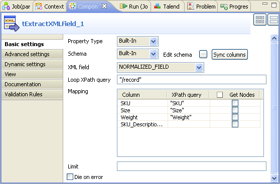Next to Edit schema, click the three-dot button to open the schema editor.
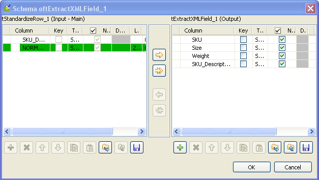On the left side of this editor, select the SKU_Description_Size_Weight row.
Click the button to add this row to the right side of the editor.
On the right side of this editor, click the plus button on the bottom toolbar three times to add three rows.
Rename the three rows as SKU, Size, Weight, all of which are tags of the normalized XML data.
Click OK to validate this editing and accept the schema propagation prompted by the pop-up dialog box. Four rows are automatically filled in the Mapping table on the Component view.
In the XML field field of the Component view, select the desired XML field of the incoming data. In this example, it is Normalized_field.
In the Loop XPath Query field, type in the name of the XML Tree root tag to replace the default value. In this example, type in
“/record”.In the XPath query column of the Mapping table, type in the XML Tree tags corresponding to desired normalized data between quotation marks. In this example, they are
“SKU”,“Size”,“Weight”.
To do this, proceed as follows:
Double click tFilterRow to open its Component view.
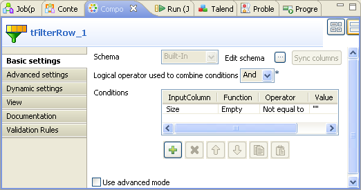Under the Conditions table, click the plus button to add one row.
In the InputColumn column of this row, select Size from the drop-down list.
In the Function column, select Empty.
In the Operator column, select Not equal to.
In the Value column, type in the quotation marks
“”.
The condition is set up. The normalized data which contain no null in the Size tag will be output while those which contain null in this Size tag will be rejected.
Press F6 to run this Job.
In the console of the Run view, you can read the desired data selected from the normalized XML data flow.
This Job lists the normalized data of interest in parallel with the raw data.
You can read the data rejected by tFilterRow as well.
| |
For reason of page space, all of the results are not displayed. |
In this scenario, six components are used to standardize addresses from unstructured data which were copied from a Website, matching them with the data contained in an index that was previously generated by a Job.
For more information about index creation, see the section called “tSynonymOutput”.
Drop the following components from the Palette to the design workspace.
tFixedFlowInput: this component holds the unstructured data from which the addresses are extracted.
tStandardizeRow: this component defines the address rules and generates the addresses in XML format with the defined tags. This is the process of normalizing and standardizing the initially unstructured data.
tFilterColumns: this component filters the standardized addresses.
tExtractXMLField: this component extracts the attributes from the Address node of the XML tree in order to output every address item in formatted columns.
two tLogRow: these components are used to display the output data. The first tLogRow returns the errors, if any. The second tLogRow displays the result in the console.
Before starting up to replicate this scenario, you have to retrieve the content of an index in order to match the unstructured data with the index data. The content of the index reads as follows:
On the left side are held Paris street names and on the right side are held the synonyms used in the data. The data will be used as references to standardize the address data collected from the website of interest, for example, from http://paris.conciergerie.com/travel_paris/address.php.
To replicate this scenario, proceed as the following sections illustrate.
To do this, proceed as follows:
Double-click the tFixedFlowInput component to display its Basic settings view.
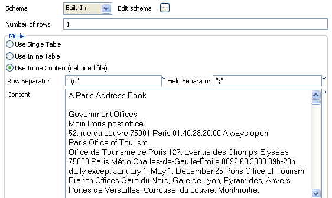In the Schema list, select Built-In then click the [...] button to define the schema.
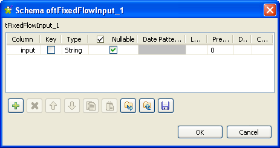In the schema editor, click the [+] button to add a column and set the Type column on String.
Name it input.
Click OK to validate and close the editor.
In the Number of rows field, enter 1.
In the Mode area, select Use Inline Content (delimited file).
In the Row Separator field, type in the row separator “\n”.
In the Field Separator field, enter the field separator “;”.
In the Content field, paste the data copied from the Website. These data are unstructured.
Then you can continue to configure the standardization process.
To do this, proceed as follows:
Connect the tFixedFlowInput component to the tStandardizeRow component with a Row > Main link.
Double-click the tStandardizeRow component to display its Basic settings view.
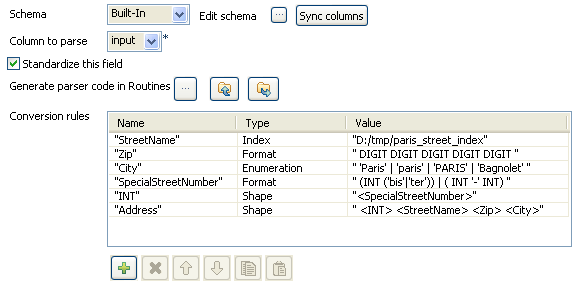In the Schema list, select Built-In.
In the Column to parse list, select input.
Select the Standardize this field check box.
In the Conversion rules table, click six times on the [+] button to add six columns. Name them and configure them as shown in the capture.
For “StreetName” rule: select the Index type in the Type field and enter the path to your index in the Value field. Then the other rules are:
Name
Type
Value
"Zip"
Format
" DIGIT DIGIT DIGIT DIGIT DIGIT ""City" Enumeration " 'Paris' | 'Paris' | 'PARIS' | 'Bagnolet' ""SpecialStreetNumber" Format " (INT ('bis'|'ter')) | ( INT '-' INT) ""INT" Shape "<SpecialStreetNumber>""Address" Shape " <INT> <StreetName> <Zip> <City> "Among these rules, at first executed are the "Zip", "City" and "SpecialStreetNumber" rules and then are the "StreetName", "INT" and "Address" rules, as the former are basic rules and the latter are advanced rules.
Click the Generate parser code in Routines button in order to generate the code in the Routines.
If you do not click on this button, the Job will not be executed.
In the design workspace, right-click the tStandardizeRow component to connect it to the tLogRow below with a Row > Reject link.
Double-click the tLogRow component linked to the tStandardizeRow component to display its Basic settings view.
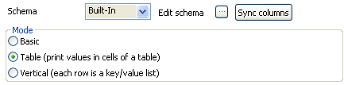In the Mode area, select the Table (print values in cells of a table) option.
Then continue to configure the process of filtering and extracting the data of interest.
To do this, proceed as follows:
In the design workspace, connect tStandardizeRow to tFilterColumns with a Row > Main link.
In the Basic settings view of tFilterColumns, click the [...] button next to the Edit schema field to open the schema editor.
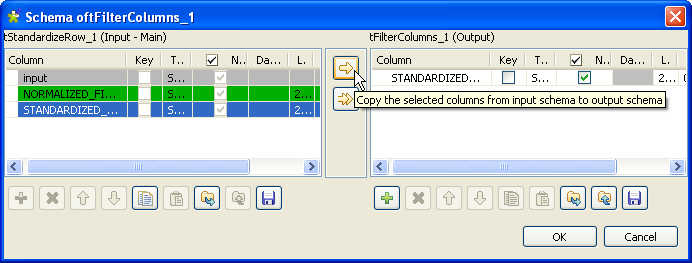Click on the STANDARDIZED_FIELD column, then click the first arrow to filter this column.
Click OK to close the editor and validate the changes.
In the design workspace, connect tFilterColumns to tExtractXMLField with a Row > Main link.
Double-click the tExtractXMLField component to display its Basic settings view.
In the Property Type and Schema lists, select Built-In.
Click the [...] button next to the Edit schema field to open the schema editor.
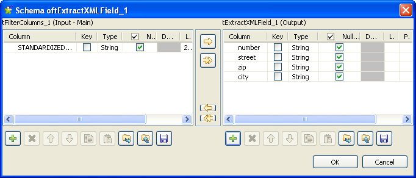Click four times on the [+] button to add four columns and name them respectively number, street, zip and city.
Click OK to validate and close the editor.
In the XML field field, check that the STANDARDIZED_FIELD column is selected.
The content of the STANDARDIZED_FIELD column is an XML field with a
<record>tag as root. Under this tag, the structure defined by the rules configured in the tStandardizeRow component allows to extract each item of the address, as you can see in the following capture.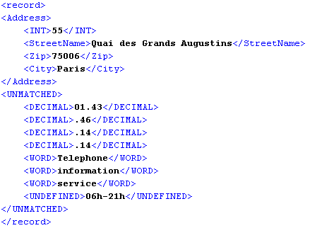In the Loop XPath query field, type in “/record/Address”.
In the Mapping table, in the XPath query field, enter “INT” for the number column, “StreetName” for the street column, “Zip” for the zip column and “City” for the city column.
Then you can prepare to execute the Job.
Before executing the Job, you need to add the tLogRow component to display the execution result.
To do this, perform the following operations:
In the design workspace, connect tExtractXMLField to the second tLogRow with a Row > Main link.
Double-click the tLogRow component to open its Basic settings view.
In the Schema list, select Built-In.
Click the [...] button next to the Edit schema field and check that the input and the output schemas in the tLogRow are synchronized.
If not, click on the Sync columns button.
In the Mode area, select the Table (print values in cells of a table) option.
Press F6 to execute the Job.
The second tLogRow displays the normalized and standardized addresses in the console according to the index.
For example, you can see that the Champs Elysées address has been selected and formatted.
The first tLogRow does not return anything in this scenario because no error has been generated.